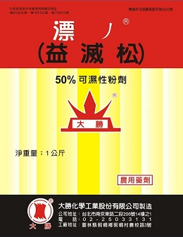

Dec 20 2020 鹿角秘境編輯部撰寫
粉蝨也時不時的出現危害鹿角蕨。該蟲體型微小，不易發現，主要在鹿角蕨葉背刺吸汁液，使得植物養分丟失，而出現枯萎的現象，同時誘發煙煤病，莖葉上會有大片難看的黑粉，直接影響植株的觀賞價值。
圖/愛花人集合
發現粉蝨後，應及時噴藥進行防治，藥劑可選25%益滅松乳油1000倍液，或濃度為40%的氧化樂果1000倍液，噴藥時間最好選在粉蝨成蟲活動性弱的清晨進行。
>|  |
益滅松益滅松純品為白色無臭晶體，熔點72℃～72.7℃。工業品為白色或淺褐色晶體，熔點5 9℃～6 3℃，具有特殊刺激性臭味。 微溶於水，溶於甲醇、乙醇、苯、甲苯、四氯 化碳、丙酮等有機溶劑。遇鹼分解。 |